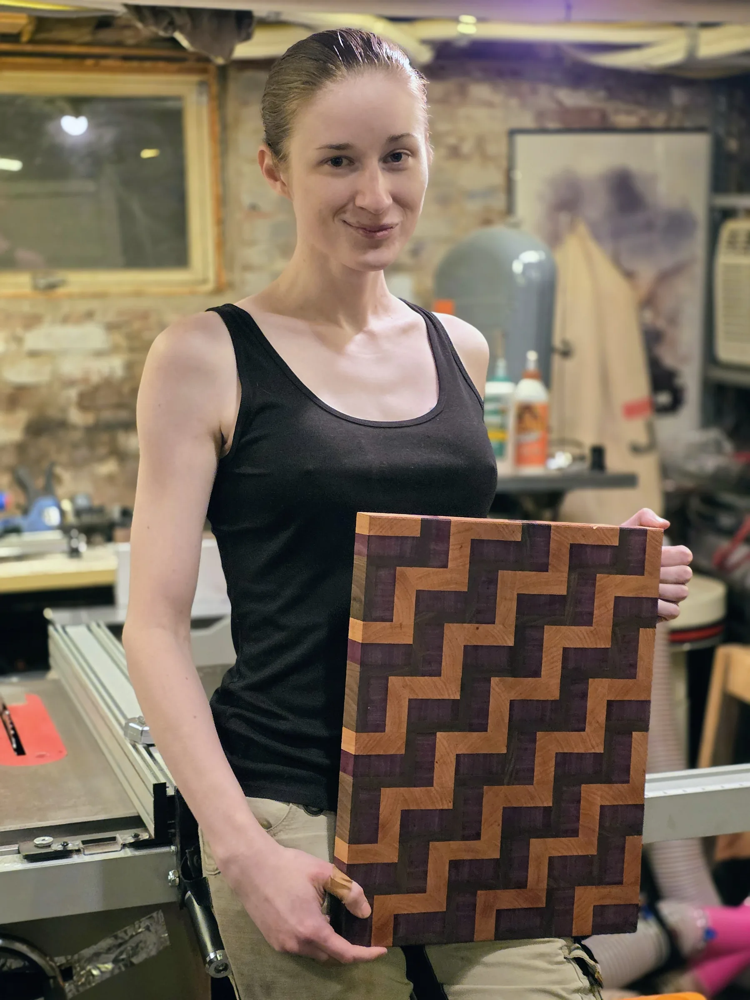
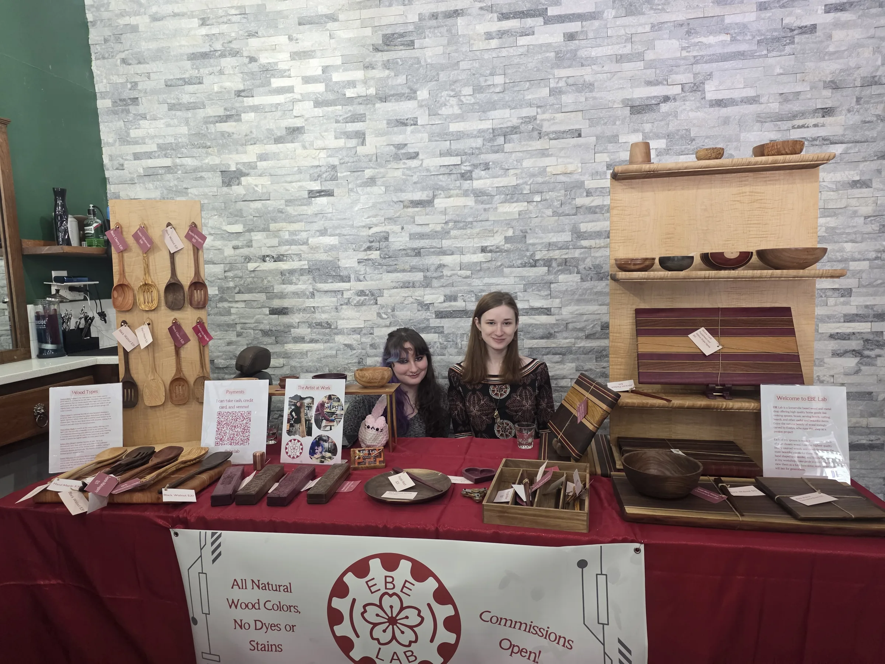

EBE Lab is a small wood and metal shop in Somerville, MA, run by Evelyn Dooley.
Locally sourced hardwoods — walnut, cherry, olive, maple, satinwood — turned and shaped into heirloom pieces built to be used: cooking spoons with properly proportioned bowls and slightly squared edges for getting into corners, hand-turned bowls, and other handmade goods made one at a time.
Find EBE Lab at markets around Boston, in the online shop, or on Etsy.

Email: evelyn@evelyndooley.com
Instagram: @ebe.lab
Etsy: etsy.com/shop/ebelab
Shop: lab.evelyndooley.com